收录于合集

简
阎学通
清华大学国际关系研究院院长、世界和平论坛秘书长
周方银
广东外贸外语大学广东国际战略研究院教授
★
提要： 本文探讨了国家双边关系的定量衡量这一基本理论问题。国家间关系根本上是由国家间的事件表现出来的,因此,本文借鉴了事件数据分析的已有成果,并有所改进。通过确定双边关系分值标准,设立事件影响力转换公式,衡量由事件引起的既有双边关系分值的变化等环节,克服了从事件数据分值过渡到双边关系分值中存在的理论和技术困难。对过去5年中美关系、中俄关系等的数据测试表明,本方法能够对双边关系进行比较有效的衡量,衡量的结果能够直接应用于对双边关系的分析,并具有比较明显的政策意义。
关键词： 国家双边关系；定量；衡量；事件数据
★ ****
国际关系学的研究对象十分广泛,但其中一个最基本的研究对象是国家的双边关系。 随着这门学科的不断发展, 国际关系研究从研究国家关系的性质变化逐渐走向研究国家关系的程度变化,从定性分析走向定量分析。 定量分析国家关系的基础是定量衡量国家的双边关系,但如何才能科学地定量衡量双边关系却是一个学术难题。从2002年以来,我们一直在摸索解决这一难题的方法,现将取得的成果提供给同行检验。
一、国家双边关系衡量方法及其问题
国家间的关系是由国家间的事件表现出来的,因此事件数据分析就成为定量衡量双边关系的基本方法。 事件数据分析是国际关系研究中行为主义的产物,它开始于1960年代。其代表性模型有爱德华·阿萨尔(Edward Azar)的“冲突与和平数据集”(COPDAB,1982)、查尔斯·麦克莱兰(Charles McClelland)的“世界事件互动测量”(WEIS,1976)、马里兰大学的“全球事件数据系统”(GEDS)和堪萨斯大学的“堪萨斯事件数据系统”(KEDS)等等。 事件数据分析法把复杂的政治行为分解为一系列的构成单元,如评论、访问、回报、抗议、提出要求、发出威胁、采取军事行动等等,然后对它们进行赋值。 国际关系的定量研究,就是把行为体的互动行为进行数值编码,然后进行分析。 事件数据的统计过程主要有四个步骤: (1)确定事件消息的来源;(2)建立或选择一个编码系统;(3)按照该编码系统对事件进行赋值;(4)计算赋值结果并进行分析。
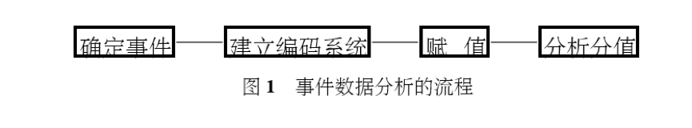
事件数据分析的核心,是如何把双边关系中的事件转化为可以定量处理的数值。 赋值方法不同,衡量结果也会不同。赋值的原则是,在 “冲突—合作” 这一维度上对不同的事件赋予不同的数值,但不同赋值系统的具体赋值标准却是不同的。例如,戈尔德施泰因(Goldstein)分值的权重标准大体上相当于阿萨尔—斯隆(Azar- Sloan)分值权重标准的对数。不同的赋值系统不仅赋值标准不同,研究功能也不同,即对观察分析双边关系所能提供的帮助不同。下图是按戈尔德施泰因权重标准对1979—1997年间伊朗和伊拉克双边关系事件赋值的图形。
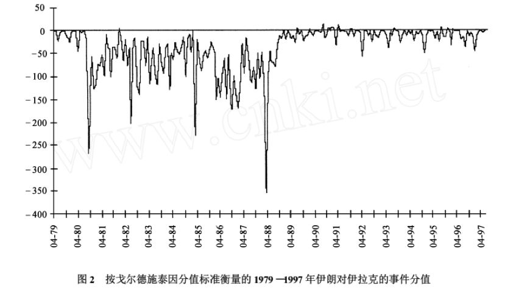
戈尔德施泰因的赋值方法,可以通过分值变化表现出军事冲突的某些规律,有助于观察具体冲突的特征,特别有助于对冲突周期和冲突前期特征的认识,所以经常被用于中东问题研究。 不过这种赋值方法并不能表现双边关系友好或敌对的程度。 例如在图2中,两伊关系冲突事件数据中有些点的分值为零,这表明这一时期两伊之间没有发生军事冲突,但这并不能表明此时的两伊关系既不敌对也不友好,因为事实上这两个国家的关系是处于敌对状态的,只是在那一时刻没有发生军事冲突事件而已。
中国学者 李少军 先生曾在2002年对中美关系做过定量分析。他根据公开文献提供的信息,将中美互动的事件转化为具体数值,然后根据数值和图形分析中美关系的变化特征。该项研究是国内学术界对双边国家关系进行定量研究的首次尝试,有相当的科学性。该研究方法的分值评估体系是确定的,计算过程是由计算机完成的,事件的选取来自公开出版物,数据来源可公开检验。他所建立的“冲突—合作模型”,认为中美关系是冲突与合作的连续体(conflict cooperation continuum),冲突与合作之间可以连续过渡。根据这个“冲突—合作模型”,他建立了一个评估体系,并按照这一评估体系对事件赋值。他评估的时段是克林顿执政8年(1993—2000年)间的中美关系。通过以月为时间单位对数据进行处理,得到了如下的中美关系示意图。
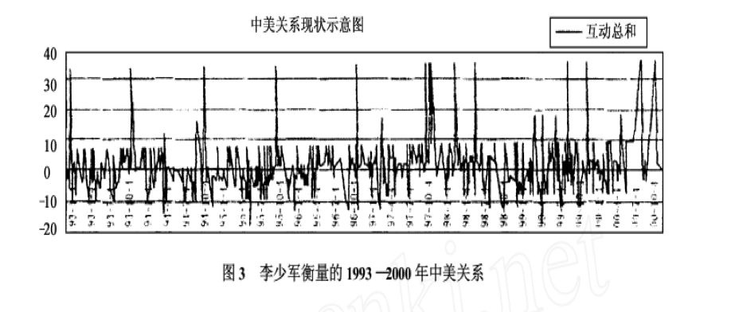
不过,这项研究存在一个问题,即把国家互动事件的分值当作双边关系好坏程度的分值,因此其衡量结果并不能反映双边关系的性质和好坏程度。 事实上,国家间的互动事件是在双边关系历史的基础上决定双边关系变化的方向和程度的,事件本身并不能告诉我们双边关系的友好或敌对程度已经达到了什么水平,也就是说,事件分值衡量不能等于关系分值衡量。 在图3中我们可以看到,中美关系的分值时而为正时而为负,但事实上中美关系的性质并非每个月都在朋友和敌人之间频繁地变化。 如果我们根据两国间在某月发生的事件的分值来判断两国关系当月所处的好坏等级和程度,至少会出现如下两个问题: (1)当两个国家在某月没有重要事情发生时,此时得到的双边关系分值将为零。也就是说它们的关系处于既无冲突也不友好的绝对中间状态,这显然不符合国际关系的常识。按照一般常识,在没有重大事件发生的情况下,两国关系应保持在原有的敌对或友好状态。(2)以事件数据作为双边关系的直接分值,将使双边关系的衡量总是从零开始,从而失去了历史基础。如果两国在某月发生的事件都是正面的,则该月两国关系为正,如果该月发生的事件都是负面事件,则该月两国关系为负。如此衡量的结果将可能与事实完全相反。
二、国家双边关系衡量方法
（一）衡量双边关系的基本流程
要有效衡量国家双边关系友好或敌对的程度,核心问题是解决从事件赋值向关系赋值的转化。 我们的基本设想是,双边关系是由众多事件组成的,这些事件随着时间形成了一个 “事件流” ,对双边关系的衡量需要在 事件累积 和 流动 两个维度上同时进行衡量。也就是说,对事件影响力进行累积是我们衡量的起点,测量事件影响力随时间流动的变化是衡量的过程,双边关系现状是衡量的终点。从起点到终点之间的转化过程将是复杂的,因此将事件数值转化为双边关系数值的合理性,将取决于转化后的双边关系数值能否与实际经验相一致,至少要有很强的相似性。为此,我们设计了如下定量衡量双边关系的流程。
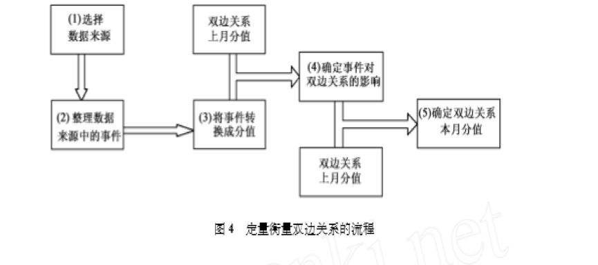
在上图中, 环节(1) 是对数据来源进行选择。从统计分析的角度来说,无须穷尽所有的公开数据来源,只要数据来源可靠就行。例如,衡量中国与大国的双边关系,选择《人民日报》和中国外交部网站的事件数据就可基本满足需要。
环节(2) 是将数据来源中与我们研究对象和研究范围有关的事件进行筛选和归类。
环节(3) 是在“冲突—合作”这一维度上,根据对双边关系影响力的大小将已发生事件转换成一维的事件分值,即将当月发生的正负事件的分值相加,求得该月的事件总分值。这一转换需按预先确定的事件分值表来实现。设定事件分值表是为了保证转换过程具有较大的一致性和可比性。
环节(4) 是把事件分值进一步转换成对双边关系的影响值。环节(4)与环节(3)的区别在于,环节(4)的赋值需要考虑双边关系所处位置的影响。这是因为,当双边关系的好坏程度处于不同水平时,同一事件对该双边关系的影响力不同。例如2001年中美军机相撞事件,对两国关系产生了很大的负面影响,但是在朝鲜战争期间,中美间的一场空战就是平常事件,对两国关系的影响极小。
环节(5) 是把由事件导致的双边关系的变化值叠加在上个月双边关系的分值上,得到当月的双边关系分值。
（二）对双边关系分值标准的设定
用数值表示双边关系的好坏程度的第一个问题是如何制定数值衡量标准,也就是要设定两国关系变化的度量范围。对于数学上的距离空间,人们可以设定许多不同的距离标准,如欧几里得距离,闵可夫斯基距离等等。设定此类衡量标准,要符合方便性和有用性原则。例如在常压下,我们将水的冰点设为0℃,沸点设为100℃。借鉴这个方法,我们设定双边关系变化的分值范围为-9到9,其中,-9代表两国关系最恶劣的情形,9代表两国关系最友好的情形,这是两种极限情况。两者的中值为0,它表示两国关系处于绝对的非敌非友状态,两个毫无关系的国家之间的关系可视为这种状态(如柬埔寨与布基纳法索的关系),或是双边关系中的合作与冲突是绝对地各占50%的情况。双边关系在极端敌对或友好的状态下受事件影响的敏感性弱,在绝对非敌非友状态下受事件影响的敏感性强(参见图9)。双边关系的这一客观特征,在进行数值衡量时表现为,双边关系的分值越接近0,事件使双边关系分值变化的范围越大,而双边关系分值越接近9或-9时,事件使双边关系分值变化的范围越小。根据这一特征,我们采取逐级递减011的原则,设定了从中值0到9和-9非等距间隔的国家双边关系数值标准。
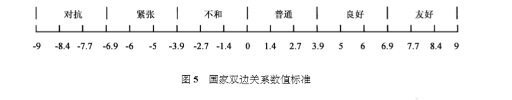
（三）事件分值表的设定
为了避免赋值的随意性,我们依照事件数据分析中的通行做法,设定一个确定的事件分值表来保证赋值的一致性。在事件数值分析中,比较具有代表性的分值表有阿萨尔—斯隆分值标准、戈尔德施泰因分值标准和“世界事件互动测量”分值标准。但这些分值标准主要是用于分析冲突行为,无法用于衡量双边关系,为此我们制定了一套与双边关系分值标准(图5)相一致的事件分值标准(参见附录)。
设定这个事件分值表时,我们坚持了完整性和排他性两个原则。 完整性是指可能选取的事件都能按分值表赋予分值;排他性是指同一事件只适用于一个分值,避免同一事件归入两个以上类别的可能。 事件分值表是根据经验确定的,但是在它确定以后不再改变,从而避免了赋值的主观性和随意性。
（四）事件影响力分值的计算
事件对双边关系分值的影响力取决于本月两国关系中的事件和两国关系上月的分值这两个变量。 事件的作用是使两国关系发生变化(变好或变坏),但这种变化是在现有两国关系基础上发生的。 在不同关系水平的基础上,相同事件对两国关系的影响力不同。 例如在两国关系已经很友好的情况下,首脑会晤对双边关系的改善作用是很有限的。而在两国关系不好的情况下,举行一次首脑会晤,或者签订一项合作条约能起到明显改善双边关系的作用。为了解决事件在不同关系水平上的影响力不同的问题,我们根据双边关系分值标准(图5),设计了如下的事件影响力计算公式:
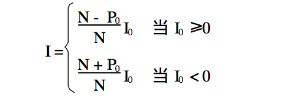
I表示事件在两国关系位于P0时的分值
N表示两国关系变化范围的绝对值
P0表示事件发生时两国关系的初始值
I0表示事件在事件分值表中的分值因为两国关系的变化范围是[-N,N],因此P0的取值范围为[-N,N],在本研究中P0的取值范围为[-9,9]。
上面的公式具有如下特点:
**1.当事件对两国关系起正向推动作用时,即当I0
0时,随着初始位置从对抗向友好的方向移动,事件的正向推动作用逐渐减小。**当两国关系达到最友好状态时,正面事件的正向推动作用为0。例如,1971年尼克松总统访华之前,中美在越南战场上是敌对方,美国总统尼克松访华使中美关系发生了质的变化,而中美建立了正式外交关系后,美国总统里根访华对双边关系的推动作用就远远小于尼克松访华的作用。
**2.当事件对两国关系起负向推动作用时,即当I0 <0时,随着两国关系初始位置从对抗向友好方向移动,事件的负向推动作用逐渐增强。**在两国关系最紧张的情况下,负面事件的负向推动作用为0,即任何负面事件都不能使两国关系的数值小于-N。例如,2000年美国总统小布什上台,此时中美关系是非敌非友,因此撞机事件使得双边关系严重倒退,但在1965—1971年间援越战争时,双方互为敌手,中国军队在越南战场上打下美国轰炸机或是美军轰炸中国防空阵地,对双边关系都没有重大影响。
3.当两国关系处于零位置,即初始值为0时,事件影响力分值等于事件分值表中的分值。
4.该公式具有对称性。 当P0与I的数值相同且符号相反时,意味着推动力相同,但方向相反。
（五）两国关系当前分值的确定
两国关系的本月分值等于两国关系的上月分值加上由事件引起的本月两国关系的变化值。这似乎是一个简单的相加,但由此产生的一个难题是,上月分值如何确定?因为上月分值的确定又依赖于上上个月的分值,这意味着有了上上个月的分值才能获得上个月的分值。这一逆推过程可以是无休止的,于是产生了第一次主观确定的初始值误差影响以后分值计算准确性的问题。然而,我们所设计的影响力公式具有一种纠偏能力,随着统计时间的延长可以纠正初始值误差,从而解决了确定上个月分值的准确度难题。下一节我们将通过检验双边关系初始值收敛效果的方法来表明这一点(参见图7)。
三、对国家双边关系衡量方法的测试
设定了双边关系定量衡量的方法之后,我们需要 对事件分值表、双边关系初始值计算方法以及双边关系总体衡量的合理性及其有效性进行测试。
（一）对事件分值表合理性的测试
为了检验所设定的分值表对事件赋值的合理性,我们采用两种事件分值表对比的方法,来观察不同事件分值对双边关系的影响力。 我们实际使用的事件分值表是依据事件的重要性进行赋值的,在检验时我们又设计了一个按事件个数赋值的分值表。这个分值表将正面事件一律赋值为1,负面事件一律赋值为-1,这样只区分事件对双边关系变化方向的影响,而不区分其对变化程度的影响。例如,如果某月的事件分值为-5,则意味着该月负面事件比正面事件多了5件。以下我们称这种赋值表为简化分值表。下面是我们分别用这两个不同的事件分值表逐月统计的中美关系中发生的事件分值,其结果如图6。
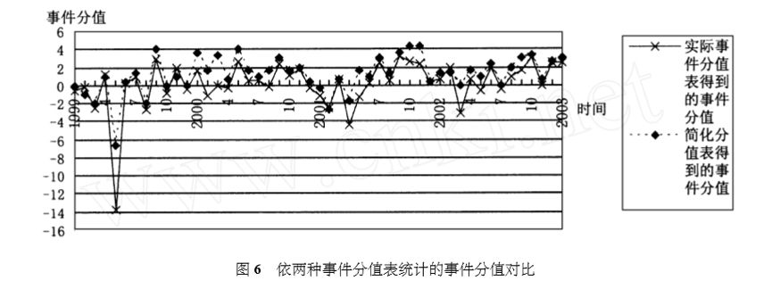
我们把简化分值表得到的事件分值统一除以3,使两者在图中的变化曲线接近,以便观察。这不会影响分析的性质,因为我们对比的目的在于看它们的变化方向是否相同,以及它们之间是否具有相关性。从图6中可以看到,在90%以上的点上,这两条曲线的变化方向是一致的。对这两个变量进行回归分析,得到如下结果:
实际事件分值=-111817+013847×简化事件分值回归方程的决定系数r2=01772,P值=01000,表明实际事件分值与简化事件分值的相关性很强(见图7)。这说明,即使使用简单的简化分值表,也能够得到有意义的结果,更何况我们实际采用的分值表对事件的赋值是更精细的,提高了对事件重要性赋值的准确度。这意味着我们所采用的这个分值表是可以满足定量分析需要的。
（二）对初始值(上月分值)计算方法有效性的测试
如前所述, 我们在衡量两国关系的当前分值时,面临的一个难题是初始值无穷逆推。我们解决这个问题的思路是,对过去某个时间的双边关系做多个任意赋值,然后从这些不同分值出发计算当前分值,经连续时间的统计计算,观察它们各自结果之间有多大差别。 如果差别依旧,则说明这种计算初始值的方法无法解决初始值不准确的问题,如果汇集于一点,则说明使用这种计算方法是有效的。为此,我们做了如下检验,对1998年12月的中美关系做不同的赋值,让它们分别从9至-9的七个不同的初始分值出发,观察其至2003年底的结果,参见图8和表1。
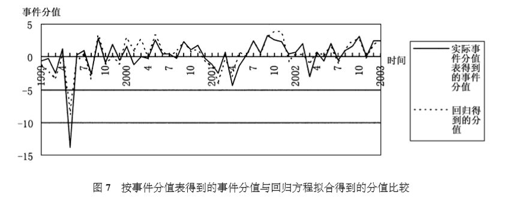
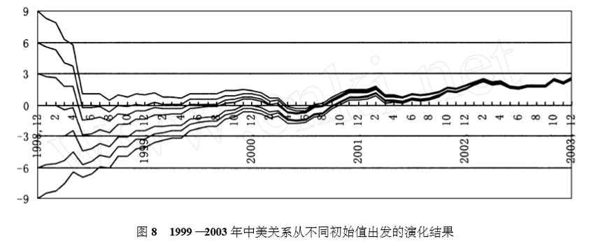 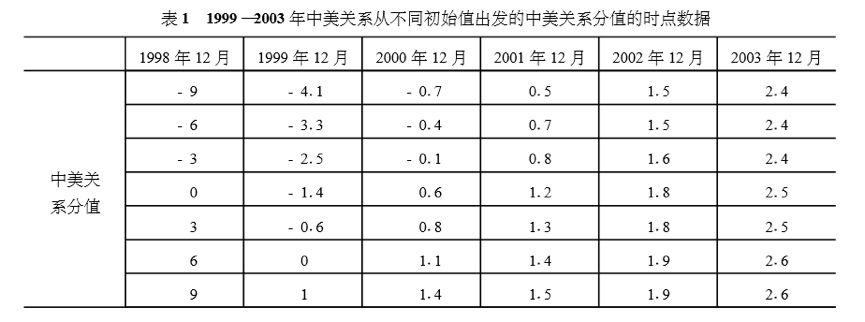
图8表明，随着时间的延长,从不同分值起点出发的中美关系的每月分值呈现向狭窄范围汇聚的趋势,后来,它们汇聚到同一个点。特别是,对于极端情况,数据也能够较快地收敛,这意味着使用本文设计的双边关系衡量方法,即使对过去两国关系初始值的赋值有较大的误差,也能将其纠正到与双边关系实际情况相符的点上来。由于这种计算方法对初始值的统计是以以往若干年的“事件流”为基础的,因此较长时期的连续统计计算结果,实际上是对“事件流”的浓缩反映,因此能消除较早初始值的误差,保证当前初始值(上月分值)的准确性。由此也说明这种计算方法是合理和有效的。
（三）对衡量方法总体效果与实际情况一致性的测试
为了检验我们设计的双边关系衡量方法是否可以客观反映实际的双边关系,我们需要用 经验事实为依据来进行检验 。首先,我们让两个不同的双边关系从相同的初始值出发,然后进行连续的统计计算,观察两个双边关系的不同“事件流”是否能够使它们产生差别,而且这种差别是否与我们所了解的客观历史事实相一致。与客观历史事实一致,则说明这套双边关系定量衡量方法是有效的,否则是无效的。
我们以中美关系和中俄关系为例进行检验,以1998年12月为初始点,为不失一般性,设这两个双边关系的初始分值都为0。然后,根据前述衡量流程对这两个双边关系的分值进行逐月计算,得到如下演化图。
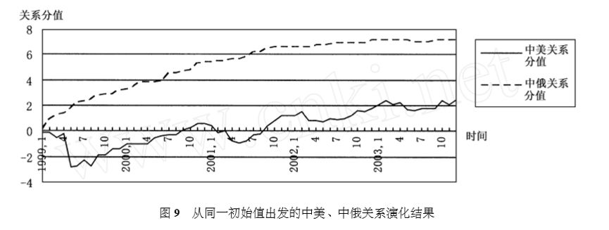
当我们设定1998年12月中美关系、中俄关系的初始分值分别为0、0时,得到的2003年12月中美关系和中俄关系的分值分别为215、711。从图9中我们可以看到,1999年1月中美关系和中俄关系从相同的初始值出发,但它们的演进路线很快就分岔了,中俄关系明显好于中美关系,而且这种差距有相当的稳定性。两条曲线的差异是非常符合冷战后中俄关系和中美关系客观实际情况的。特别是中俄关系曲线的平滑和中美关系的曲折,特别符合这一时段中俄关系与中美关系的实际特征。这还说明用“事件流”定量衡量双边关系是可以反映客观情况的。
从图8和图9所显示的结果中,我们还可以看到,初始值的位置离当前值位置越远,它导致当前分值误差的作用越小。这还表明,用这种衡量方法得到的双边关系当前值,能较多地包括双边关系中的新近事件信息,能较充分反映当前双边关系的实际状态。这对衡量当前双边关系来讲,是一种很好的性质。
四、国家双边关系衡量方法的应用
我们设计定量衡量双边关系的方法,最直接的目标是使双边关系的赋值合理,但最根本的目的还是为研究双边关系提供一个新的工具,从而使研究人员可以更加深刻地认识双边关系,得出更加符合客观实际情况的判断。在此,介绍一下这种衡量方法适用的研究内容。
（一）用于识别双边关系的一般性变化特征
通过定量衡量不同的双边关系,可以观察双边关系在不同敌对或友好的水平上的变化敏感性。我们用本文设计的方法,衡量了2001—2003年的中俄、中美两个双边关系,得到如下图形。
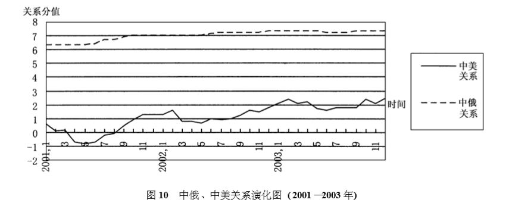
从图10中,我们可以看到,中俄关系的变化曲线是相对平滑的,而中美关系的变化曲线则是大起大伏的。这表明,当双边关系向敌对或友好的极端状态接近时,双边关系的稳定性会提高,一般事件对双边关系的影响力下降;而双边关系接近非敌非友的状态时,双边关系则容易大起大伏,事件会导致双边关系发生较大程度的变化。根据对中美、中日、中俄、中法、中印关系的衡量,我们发现当双边关系达到良好和紧张的状态,即双边关系分值大于319和小于-319后,双边关系开始显现稳定特征。
（二）用于识别双边关系的细微差别和变化
定性分析方法可以识别双边关系中的重大变化,但难以判断细微变化的程度。例如,定性分析方法可以判断出,2004年的中俄关系明显好于中法关系和中印关系,但是,定性分析的方法很难对双边关系如中美关系和中日关系的好坏差别程度做出判断。依据定量分析方法得到下面图形，研究人员就可以比较这两个双边关系的差别了。
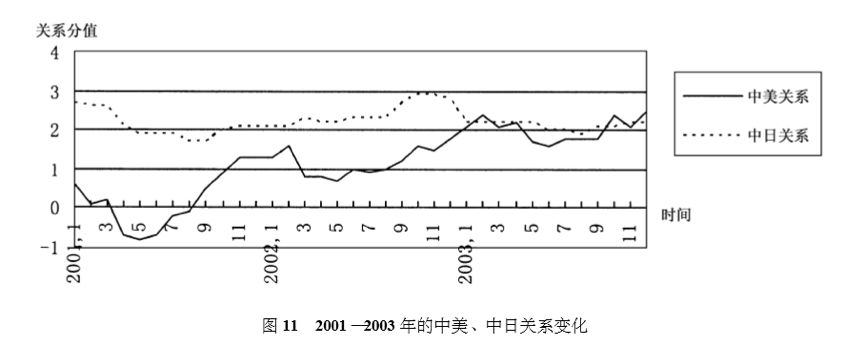
在图11中我们可以看出,从2001年1月到2002年12月,中日关系一直好于中美关系,但是,到2003年2月,中美关系首次好于中日关系,此后,2003年10月和12月,中美关系又两次好于中日关系。这种细微变化,人们根据主观经验是无法判断的。通过把中美关系与中日关系的演化曲线进行比较,可以使研究人员更敏锐地把握到它们的变化趋势。例如,本文的作者曾在2004年1月4日预测,其后三个月内,“中日政治关系将成为中国与所有大国的双边关系中最差的,甚至不如中美关系。”这一预测被后来发生的历史事件所证实。而这一预测结果就是用本文设计的衡量方法对中日和中美关系进行定量衡量后做出的。
（三）可帮助认识具体双边关系变化的时间特征
以中美关系为例,下图是对1999—2003年每年中美关系变化的定量衡量结果。
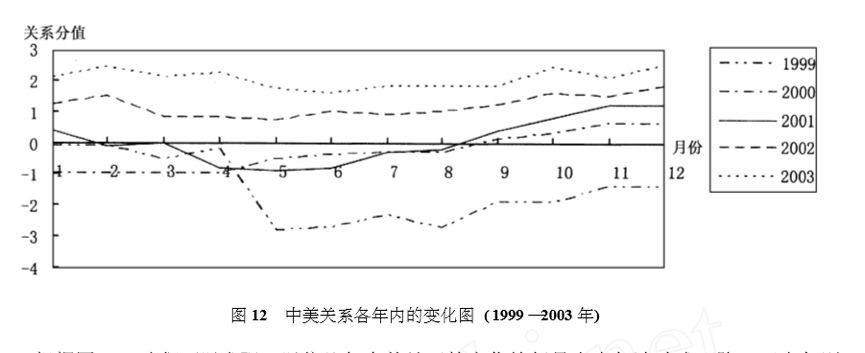
根据图12,我们可以发现,以往几年中美关系的变化特征是上半年波动式下降,下半年则平稳回升。即使我们不知道引发这种变化特征的原因,图12显示的特征也足以给我们提供相当多的外交政策启示。从改善中美关系的角度出发,认识了这种时间特性,就可以设计政策减小一年内双边关系的起伏程度。可见通过定量衡量方法,发现和认识双边关系的变化特征,对于我们更好地处理双边关系是很有意义的。
（四）可用作双边关系定量预测的基础及检验工具
自2002年秋季起,我们在研究双边关系定量衡量方法的过程中,就不断运用衡量后的结果作为我们定量预测中美、中俄、中日、中印、中法五个双边关系变化的基础。从衡量这五个双边关系变化的结果中总结预测经验,并用衡量结果检验我们预测的准确程度。至今,我们已经在《世界知识》杂志上公开了对中日、中法、中美及中俄双边关系三个月内变化趋势的定量预测,并于事后对预测准确程度进行公开检查。这种方法对于定性的预测也可以起到检验的作用,例如,在2004年1月1日,某预测说本月中日关系会明显恶化。但是,到了月底时大家对是否明显恶化可能会产生分歧,因为甲认为是“明显”的恶化,而乙则可能认为恶化得不“明显”。而引进这个定量衡量方法,就可以有效观察恶化的程度到底有多大,从而可以解决对预测准确程度衡量标准不一的问题。对双边关系的定量预测,用这一方法检验就更加客观。
对本文设计的定量衡量双边关系方法的检验和应用,显示该方法有较强的客观性、可重复性和准确性。将事件分值转化成为关系分值的系统方法,克服了事件分值等同于国家关系分值所产生的分值与实际情况不符的缺陷。固定的赋值表和分值计算方法使衡量结果有了客观标准。笔者希望通过公开事件信息来源、分值标准和计算方法,与同行共同检验这一衡量方法的合理性和可靠性,从而促进定量衡量双边关系研究的深入发展。（本文有删节和改动，注释略，详见原文。）
文章来源： 《中国社会科学》2004年第6期
筛选： 早安老师 **** 编辑： 小宜 沉安